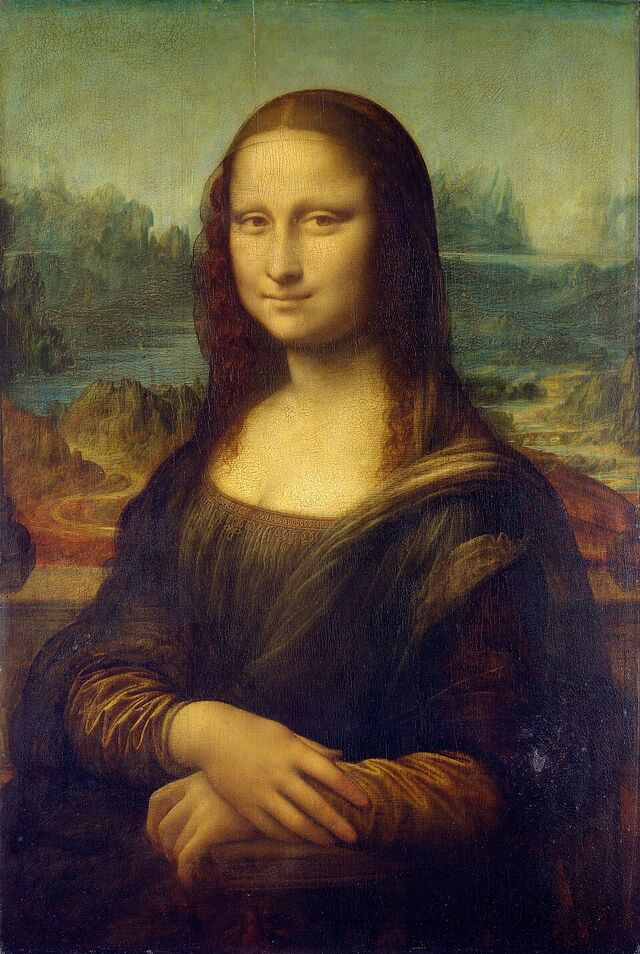

Mona Lisa
a.k.a. La Gioconda · La Joconde · the lady with the smile
- Renaissance
- Oil on poplar
- Sfumato
- Most famous portrait
On view — Salle des États, Louvre
- Age
- 523 very old — begun c. 1503
- Height
- 77 cm 30 in, head to hand
- Width
- 53 cm 21 in, single panel
- Home
- Paris 1st arrondissement
About
Painted by Leonardo da Vinci in Florence at the very start of the 1500s, the Mona Lisa is a half-length portrait of a seated woman, her body angled slightly toward us while her gaze comes straight down the centuries. Behind her runs an imaginary landscape — winding paths, a low bridge, blue-grey peaks — painted with an aerial perspective so deep it looks like a country you could walk into.
The sitter is generally identified as Lisa Gherardini (1479–1542), the wife of Florentine silk merchant Francesco del Giocondo — which is where the Italian Gioconda and the French Joconde come from. Mona is a contraction of ma donna, "my lady". Leonardo worked on the panel for years, carried it with him to France, and never delivered it. He died in 1519 with the painting still in his possession.
What keeps people looking is the technique: sfumato, Leonardo's haze of almost invisible transitions, leaves no hard lines anywhere — least of all at the corners of the mouth, which is why the smile seems to change depending on where your eye rests.
She is older than the rocks among which she sits; like the vampire, she has been dead many times, and learned the secrets of the grave. Walter Pater, 1873
Fact file
- Artist
- Leonardo da Vinci (1452–1519)
- Date
- c. 1503–1519 (worked on for years)
- Medium
- Oil, on a single poplar panel
- Dimensions
- 77 × 53 cm (30 × 21 in)
- Genre
- Portrait, half-length
- Movement
- Italian High Renaissance
- Sitter
- Lisa Gherardini del Giocondo (1479–1542)
- Location
- Salle des États, Musée du Louvre, Paris
- Entered the Louvre
- 1797 (from the royal collection)
- Earlier owners
- François I → Fontainebleau → Versailles → Napoleon
- Protection
- Bulletproof glass, climate-controlled case
- Insurance
- Valued at $100 million for its 1962 US tour
Timeline
- c. 1503 Leonardo begins the portrait in Florence.
- 1516–17 He travels to France at the invitation of François I — the panel goes with him.
- 1519 Leonardo dies at Amboise; the painting passes into the French royal collection.
- 1797 After the Revolution the Louvre puts it on public display.
- 1911 Stolen from the Louvre by Vincenzo Peruggia, an Italian handyman. The empty wall draws crowds.
- 1913 Recovered in Florence after the thief tries to sell it to a dealer.
- 1956 A visitor throws acid at the lower half; months later another throws a stone, chipping the left elbow.
- 1962–63 Loaned to Washington and New York under armed guard.
- 1974 Travels to Tokyo and Moscow, the last trips it has ever made.
- 2005 Given a purpose-built climate-controlled room — Salle des États — behind glass.
- 2022 & 2024 Cake, then soup, thrown against the glass. The smile survives; the glass does its job.
Known for
- The most written-about, most parodied and most visited painting in the world.
- Roughly 9–10 million visitors come to see her every year.
- The horizon behind her is not level — it sits higher on the left than the right.
- She has no eyebrows. Unusual for the 1500s, and possibly the result of a careful fashion choice or an old cleaning.
- The panel is warped enough that the Louvre keeps it in a sealed, humidity-controlled case.
- The 1911 theft is what turned a famous painting into the most famous painting.
- In 1962 the US tour's insurance valuation of $100 million was a Guinness world record.
- The painting is unsigned and undated, like most of Leonardo's work.
Where she's heading next
Update, 2026: under the Louvre's Nouvelle Renaissance renovation — announced in January 2025 — the museum is building a dedicated gallery for the Mona Lisa, so she can be seen on her own rather than at the end of a crowded run through the Grande Galerie. The architects for the wider revamp, Selldorf Architects and STUDIOS Architecture Paris, were named in May 2026.